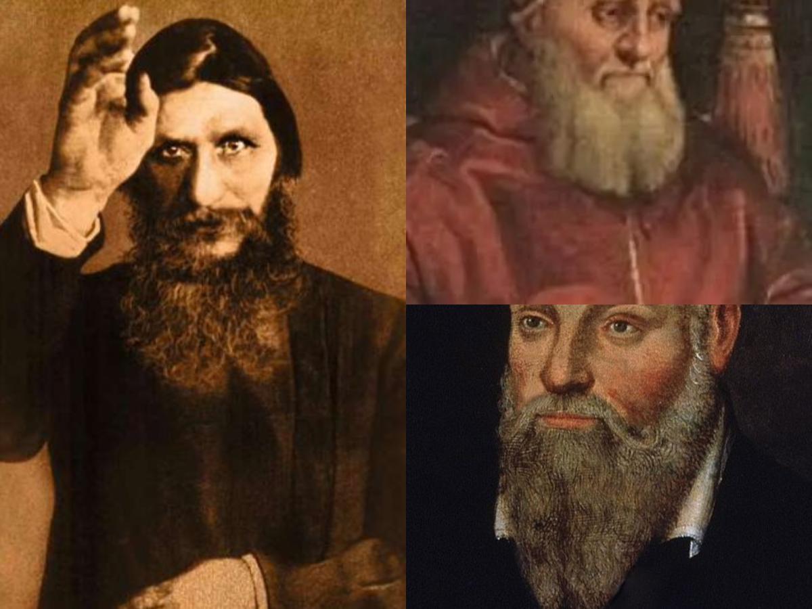
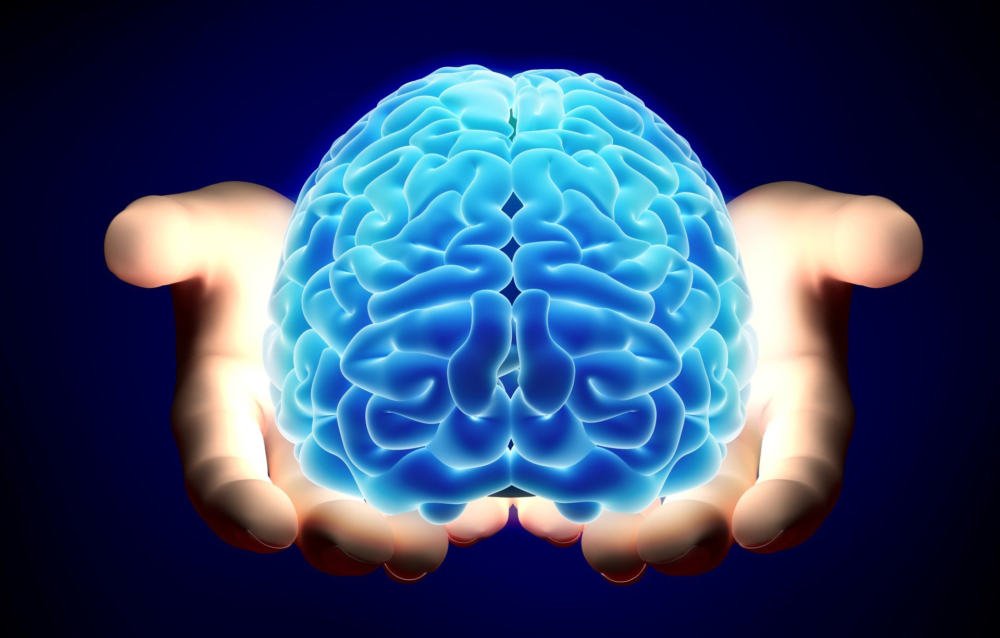
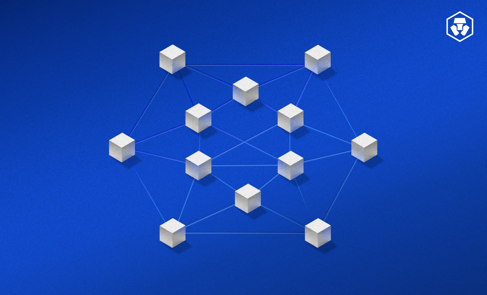

Cursos en desarrollo
Trabajamos de forma ardua para ofrecerte formación siempre pendientes de las últimas tendecias y tecnologías.
La ciencia de la felicidad

Qué significa realmente la felicidad y por qué te importa.
Cómo aumentar tu propia felicidad y fomentar la felicidad en los demás.
Por qué las conexiones sociales, la amabilidad y la comunidad son clave para la felicidad.
Qué hábitos mentales son más propicios para la felicidad y cómo la atención plena puede ayudar.
Premoniciones

Este curso es una descripción general de los sistemas de adivinación, que van desde la antigua quema de huesos china hasta la astrología moderna.
Una variedad de métodos de distintas culturas e historias para adivinar el futuro.
Un marco común que describe los intentos humanos de predecir el futuro.
Neurociencia

Fundamentos de la bioelectricidad
La importancia del potencial de reposo.
Las propiedades de las membranas pasivas.
Potenciales de acción, sus corrientes y su papel en el sistema nervioso.
Cómo puedes hacer neurociencia en tu hogar
Blockchain

La tecnología blockchain se ha desarrollado recientemente, está mejorando la banca, la cadena de suministro y otras redes de transacciones al hacer que la interacción y el comercio digitales sean más seguros y confiables.
Ampliará su comprensión del mundo de las tecnologías blockchain y aprenderá cómo están cambiando la forma en que se intercambian bienes y servicios entre los participantes.
Las empresas están implementando la tecnología blockchain para brindar un nuevo nivel de confianza, seguridad y durabilidad a sus operaciones de red.
Eche un vistazo más profundo y vaya más allá de las exageraciones mientras aprende no solo el estado del arte en tecnología blockchain, sino también cómo evolucionará en el futuro!
Termodinámica

Describe las diferentes formas de energía, como la mecánica (cinética y potencial), la eléctrica, la química, la electromagnética, la térmica y la nuclear.
Interpretar las unidades de energía y potencia y cómo convertirlas entre ellas.
Comprender las diferentes partículas subatómicas (protón, electrón, neutrón) y los principales experimentos que condujeron al concepto moderno del átomo y su estructura.
Reconocer la naturaleza de un enlace químico y comparar y contrastar los diferentes métodos de representación de los enlaces químicos en una molécula.
Explique la Segunda Ley de la Termodinámica y aplíquela a las reacciones químicas.
Obtenga una comprensión de la entalpía, la condensación del agua, la energía geotérmica y la presión termodinámica.
Próximamente

Disponible próximamente.
Lanzamiento previsto para 9 de septiembre de 2026.